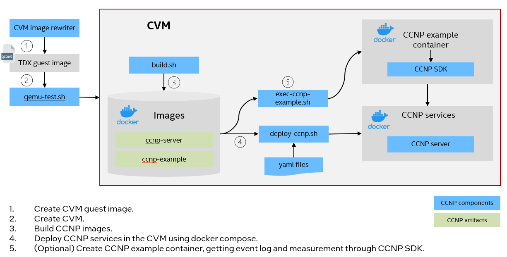

Docker Compose Deployment¶
The CCNP can be deployed in the confidential VMs using docker compose. In this document, it will use Intel TDX guest(TD) as an example of CVM and deploy CCNP on the TD using docker compose.
{kind=link}

Deploy CCNP¶
The following scripts can help to generate CCNP images and deploy them in the TD nodes. build.sh can run on either host or TD. Other scripts are supposed to run in the TD.
build.sh: The tool will build docker images and push them to remote registry if required. Skip it if you already have docker images prepared.
prerequisite.sh: This tool will complete the prerequisites for deploying CCNP on Ubuntu. For other distributions, you can follow the manual steps in Prerequisite Manually.
deploy-ccnp.sh: The tool will deploy CCNP service using docker compose.
exec-ccnp-example.sh: The tool will create a docker container, getting container event logs, measurement and performing verification using CCNP SDK.
Prerequisite¶
Run the script prerequisite.sh as below.
$ sudo ./prerequisite.sh
Deploy CCNP Service¶
Use the script deploy-ccnp.sh to deploy the CCNP services.
# Deploy CCNP with user specified remote registry and image tag
$ sudo ./deploy-ccnp.sh -r <remote registry> -g <tag>
e.g.
$ sudo ./deploy-ccnp.sh -r test-registry.intel.com/test -g 0.3
This script has some options as below.
Usage: $(basename "$0") [OPTION]...
-r <registry prefix> the prefix string for registry
-g <tag> container image tag
-h show help info
You will see below container running after the deployment.
$ sudo docker ps
CONTAINER ID IMAGE COMMAND CREATED STATUS PORTS NAMES
3a9de1a9c7d7 ccnp-server:0.3 "/usr/bin/ccnp_serve…" 36 seconds ago Up 34 seconds ccnp-server-ctr-ccnp-server-1
Deploy CCNP Usage Example¶
The script exec-ccnp-example.sh will launch a container ccnp-example.
It will get measurement, event logs and cc_report using CCNP SDK and save the output in /tmp/docker_ccnp/example.log.
$ sudo ./exec-ccnp-example.sh -r test-registry.intel.com/test -g 0.3
This script has some options as below.
Usage: $(basename "$0") [OPTION]...
-r <registry prefix> the prefix string for registry
-g <tag> container image tag
-d delete example container
-h show help info
You will see below container running after the deployment.
$ sudo docker ps
CONTAINER ID IMAGE COMMAND CREATED STATUS PORTS NAMES
e815b6edafcb ccnp-example:0.3 "tail -f /dev/null" 17 seconds ago Up 15 seconds ccnp-example-ctr-ccnp-example-1
Clean Up¶
The script cleanup.sh will help stop three containerized services and remove cache.
$ sudo ./cleanup.sh
(Optional) CCNP Prerequisite Manual Steps¶
NOTE: Below are manual Steps of CCNP prerequisite for your reference. They can be skipped if prerequisite.sh is run successfully.
Basically the prerequisite.sh complete below steps to ensure docker is installed and set device permission. You can also complete them following below steps manually.
Install docker on the TD nodes. Please refer to Get Docker.
Change the access privilege of the TDX device. .. code-block:
$ chmod 0666 $(find /dev/ -name "tdx*")
Clean up
/tmp/docker_ccnp.